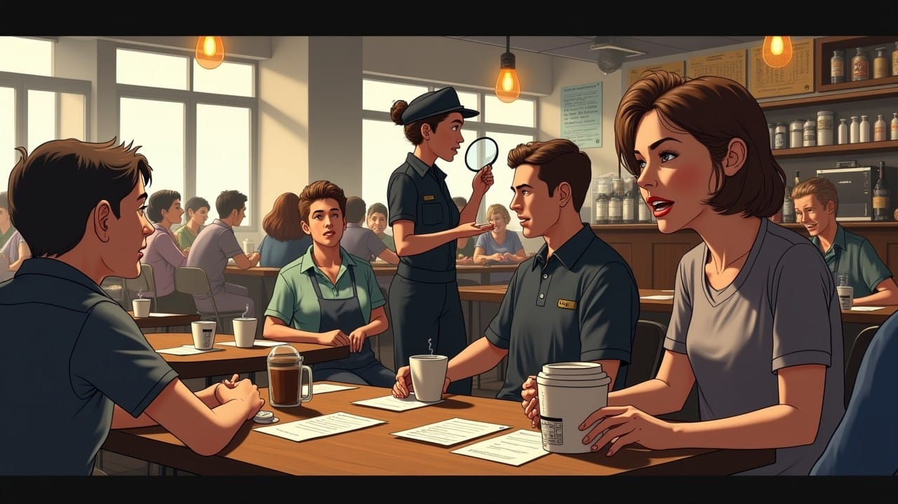
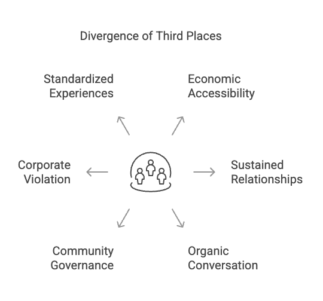
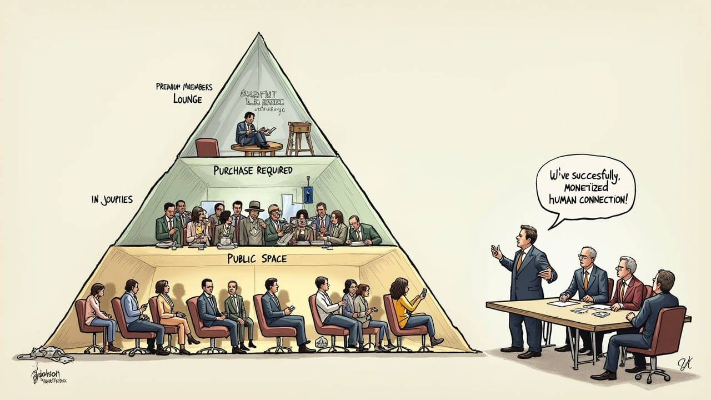
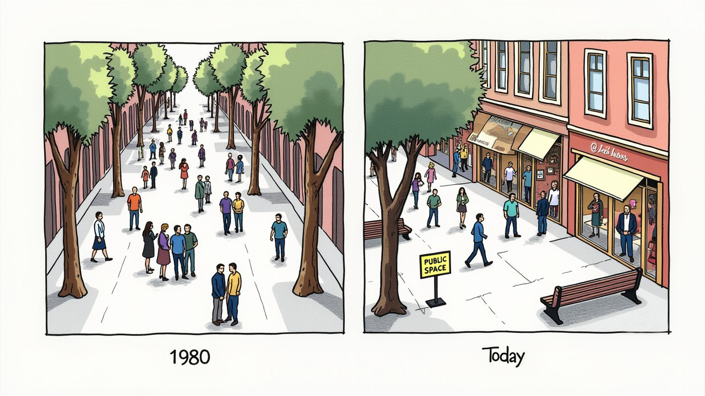
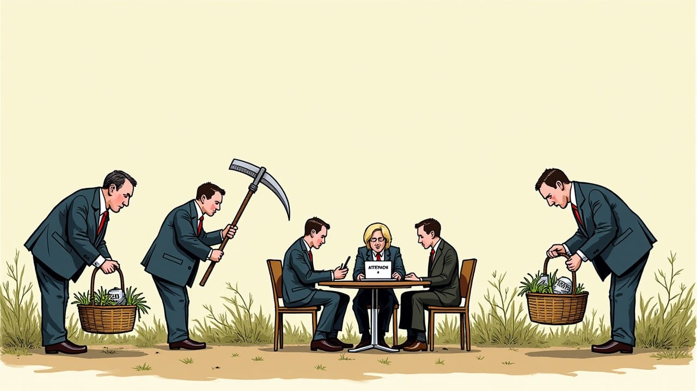
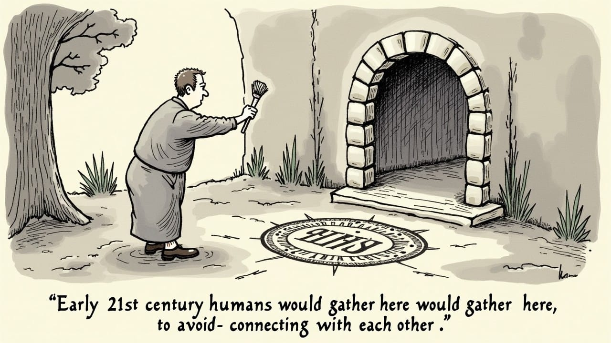

Consuming Connections—How Corporations Colonized Our Third Place
Remember when Starbucks was your 'third place'? Their recent 'buy something or leave' policy finally exposed what many suspected: the emperor never had clothes. From Instagram museums to food halls, we're now surrounded by spectacular substitutes for authentic community.


We shape our spaces, and thereafter our spaces shape us.

The Siren Who Wooed Us From Third Place to Marketplace
The mermaid's smile has always hidden sharp teeth, but it took Starbucks' recent 'customer code of conduct'—buy something or leave—to finally shatter the illusion. For years, we willingly swam into the siren's embrace, lured by the promise of Ray Oldenburg's "third place"—that essential social habitat beyond home and workplace where community forms organically. Now, as the comfortable chairs where we once lingered come with invisible timers, and the barista's welcoming smile is replaced by a receipt scanner, we're forced to confront an uncomfortable truth: the emperor never had clothes.
This moment of corporate honesty exposes not just Starbucks' hypocrisy, but our own willing participation in the commodification of community."
When Starbucks recently announced their new "customer code of conduct"—buy something or leave—they shattered a decades-long illusion, the green mermaid's smile revealing sharper teeth than we'd noticed before—or worth steering clear of said sirens. For years, Starbucks had marketed itself as the embodiment ofthat essential social habitat existing beyond home and workplace where community forms organically. The emperor, it seems, never had clothes.

The barista who once welcomed you by name now scans your receipt. The comfortable chair where you met friends, read books, or simply watched the world pass by now comes with a timer—invisible but ever-present. What felt like an invitation for my vested interest, now reveals itself as a transaction with no equity to show for.
This moment crystallizes a fundamental tension that anthropologist Daniel Quinn identified: the clash between "Taker" and "Leaver" mentalities playing out across our social landscape.
Starbucks' about-face exposes something far more consequential than corporate hypocrisy. It reveals how thoroughly we've accepted the substitution of town squares and local cafés with branded environments where every interaction happens under corporate surveillance. This raises disturbing questions: What happens when neighborhood bonds become just another commodity? These corporations manufacture community by developing specialized language around their products while employing the psychological tricks pioneered by companies like Coca-Cola. The result? Authentic connection, packaged and sold for $5.95 plus tax and an upsell to the top left hand corner of the display case.
Community for Sale
The Corporate Takeover
The contradiction was hiding in plain sight: a publicly-traded corporation, legally obligated to maximize shareholder value, cannot simultaneously function as a democratic communal space. This contradiction exemplifies what Daniel Quinn termed the "Taker" mentality—a worldview that treats community not as something to participate in and sustain, but as a resource to be captured, controlled, and ultimately consumed.

Traditional third places—the Italian piazza, the English pub, the American town square—shared defining characteristics antithetical to corporate imperatives:
- Economic accessibility across class divisions
- Regular patronage creating sustained relationships
- Conversation as the primary activity
- Minimal consumption requirements
- Community governance rather than top-down control
Starbucks and similar corporate entities violated these principles while co-opting community language. They delivered instead:
- Price points that function as economic filters
- Designs encouraging turnover rather than lingering
- Scripted interactions replacing organic conversation
- Consumption as the prerequisite for presence
- Standardized experiences eliminating local variation

This wasn't adaptation—it was appropriation. Extract the profitable elements of community, discard everything else. In Quinn's framework, this represents the quintessential Taker approach: identifying something of value in the social ecosystem, enclosing it within market logic, and transforming it from a self-sustaining commons into a managed product. The true revelation isn't corporate strategy but our willing acceptance of the substitution.
Engineered Isolation
The Vanishing Commons
The disappearance of unbranded gathering places—the corner store with its chess players, the public library reading room, the neighborhood diner where regulars occupy the same booths daily—represents a calculated spatial reorganization that eliminates any form of social interaction that doesn't generate transaction data or revenue streams.

Consider:
- Public libraries facing perpetual budget crises
- Parks increasingly dependent on private funding
- Main streets hollowed out by e-commerce
- Public squares replaced by privately-owned "public" spaces
- Community centers shuttered for lack of funding
Each elimination creates a void in our social architecture—a void that market solutions rush to fill with commodified alternatives. This transforms not just where we gather, but what gathering means—replacing the unscripted hum of neighborhood conversation with the curated playlist and scripted barista greetings of corporate comfort.

The process mirrors Quinn's analysis of how Taker cultures systematically dismantle the social structures of Leaver communities, replacing self-regulating systems with centralized control mechanisms that render people dependent on the very institutions that undermined their autonomy.
The result is what sociologist Eric Klinenberg calls "social infrastructure collapse"—the systematic deterioration of the physical places that allow communities to form and persist. When medical authorities declare a "loneliness epidemic," they're naming the symptom, not the disease. We've organized our physical environment according to Taker principles: maximizing efficiency and profit while systematically eliminating the "inefficient," unprofitable spaces where Leaver-style community happens—spaces characterized by non-instrumental social relationships, gift economies, and collective governance rather than transactional exchanges.
Spectacular Substitutes
Community as Entertainment
Nature abhors a vacuum. As authentic third places disappear, we've witnessed the proliferation of what cultural theorist Guy Debord presciently termed "the spectacle"—immersive, overwhelmingly stimulating environments designed to create the sensation of community without its substance. These spaces represent the ultimate expression of Quinn's Taker mentality—extracting the appealing elements of community while eliminating its inherent challenges and responsibilities:
- Instagram-optimized museums and experiential art installations like New York's Museum of Ice Cream, where $39 admission buys access to photogenic pools of sprinkles rather than sustained conversation
- Airports reimagined as experiential destinations such as Singapore's Changi, where travelers marvel at indoor waterfalls rather than engaging with local culture
- Brand "activation" experiences in urban centers exemplified by Nike's "House of Innovation" stores that transform consumption into participatory theater
- Festival culture's temporary autonomous zones like Burning Man, which began as radical self-expression but increasingly resembles luxury tourism for tech elites
- Curated food halls replacing traditional markets where global cuisines are presented as consumable experiences rather than cultural exchanges
These spaces represent not the evolution but the inversion of the third place concept. Where traditional third places created meaning through regularity and sustained interaction, these spectacles generate momentary intensity. Where third places facilitated organically evolving conversation, spectacles orchestrate carefully designed experiences. Where third places built enduring relationships, spectacles produce memorable but fleeting encounters.
This inversion reveals the theoretical convergence between Quinn's Taker mentality and Debord's concept of spectacle. Quinn identified how Taker cultures transform relationships into resources; Debord showed how capitalism transforms direct experience into representation. Together, they illuminate our current predicament: community itself has been transformed from direct experience into spectacular representation, from relationship into resource. Starbucks' third place marketing exemplifies this process—community becomes an image used to sell coffee rather than a lived reality emerging from sustained interaction.
And while traditional third places were economically accessible, these alternatives stratify access by wealth—from $25 museum experiences to $500 festival passes to multi-thousand-dollar destination "transformational" retreats.
The New Bread and Circuses
Consuming Instead of Connecting
The rise of these spectacular substitutes for community isn't merely a cultural shift—it's a political transformation with profound implications for civic life. The mermaid's siblings now populate every corner of our experience, mythological figures promising connection while leading us deeper into commercialized waters.
The Roman poet Juvenal diagnosed how rulers maintained control through "panem et circenses"—bread and circuses—providing food and entertainment rather than meaningful civic engagement. Today's experiential economy functions similarly by:
- Redirecting social energy from civic participation toward consumption
- Channeling discontent into spectacular but politically neutered experiences
- Creating the sensation of connection without building the social bonds that might catalyze collective action
- Stratifying access to community itself along economic lines

No conspiracy required—just the perfect alignment of corporate incentives, government disinvestment, and technological acceleration.
This orchestrated emptiness produces what philosopher Bernard Stiegler called "symbolic misery": the impoverishment of social experience through its industrialization. When we reduce human connection to manufactured experiences, we strip it of its generative potential. The spectacular replaces the social.
The timing is no coincidence: spectacular experiences proliferate precisely as civic participation declines, institutional trust erodes, and economic inequality soars. These spectacles don't merely reflect these conditions but actively reinforce them by providing temporary relief from their psychological consequences without addressing their causes.
Digital Mirages
Why Online Can't Replace In-Person
As physical third places declined, many assumed digital platforms would fill the void. You likely experienced this shift yourself—perhaps you joined Facebook groups to replace club meetings, used Instagram to share experiences once exchanged face-to-face, or created a Discord server to maintain connections during lockdown. Social media, online forums, and virtual worlds promised community without the constraints of physical space.
The pandemic forced all of us into a global experiment that exposed the limitations:
- Disembodiment of digital interaction eliminates crucial non-verbal communication—the subtle raised eyebrow or reassuring touch that conveys understanding
- Platform algorithms optimize for engagement rather than connection, keeping you scrolling but not necessarily connecting
- Commercialization of attention undermines sustained relationship building, turning conversations into content
- Absence of physical co-presence eliminates shared risk and vulnerability—the foundation of authentic trust
Consider your own digital connections: How many WhatsApp groups have you joined with enthusiasm, only to find conversation gradually replaced by forwarded memes? How many Zoom happy hours began with genuine connection but faded as screen fatigue set in? The pattern emerges not from personal failure but from structural limitations—limitations that spectacular physical experiences promise to address while introducing new forms of commodification.
These limitations help explain the simultaneous rise of spectacular physical experiences—they provide precisely the embodied, sensory aspects of community that digital spaces cannot, albeit in commodified form.
What's emerging isn't a digital replacement or a return to tradition, but a bifurcated landscape—one where authentic community becomes a scarce resource distributed along economic lines. The affluent access both exclusive physical experiences and premium digital communities. Everyone else makes do with commercial substitutes or free digital platforms engineered to harvest attention.
Beyond Corporate Blame
Our Collective Surrender
Walk into any Starbucks and observe the scene: dozens of people sharing physical space while remaining psychologically isolated. Headphones in. Eyes on screens. Purchase receipts carefully placed at the edges of tables to justify occupation. Bodies occupy the same room, yet minds inhabit entirely separate worlds. Despite physical proximity, the space facilitates consumption rather than connection.
I've spent hours in these spaces myself, participating in the illusion of community while actually retreating into private digital worlds. Perhaps you have too.
The deeper issue isn't corporate inauthenticity but our collective surrender. We now expect community to arrive pre-packaged through commercial channels. We've forgotten how to create it through civic engagement.
This acceptance reflects a more fundamental reconceptualization of social life—the colonization of community by market logic. When we evaluate social spaces primarily through consumer satisfaction metrics, we've already conceded the essential territory.
To reclaim this territory, we must first recognize what we've lost. What distinguishes authentic community from its corporate simulation comes down to five essential qualities:
- Sustained interaction: Genuine community emerges through regular, repeated engagement rather than isolated experiences
- Shared governance: Authentic community spaces evolve according to participant needs rather than corporate directives
- Productive friction: Real communities incorporate disagreement and negotiation rather than manufactured consensus
- Economic accessibility: True third places minimize financial barriers to participation
- Open-endedness: Authentic community allows for unpredictable outcomes rather than engineered experiences
Reclaiming the Commons
Leaver Solutions for a Taker World
Moving beyond critique requires reimagining what community spaces might look like in contemporary society—essentially, rediscovering aspects of what Quinn would recognize as the "Leaver" mentality that characterized human social organization for most of our evolutionary history.
International models offer instructive contrasts to American corporate dominance of social space. Copenhagen's network of public squares and pedestrianized streets prioritizes interaction over consumption. Japan's small neighborhood bathhouses (sentō) continue to function as democratic meeting grounds across class lines. Barcelona's "superblocks" reclaim streets from cars to create new community spaces. These examples demonstrate that alternatives to corporate third places aren't merely theoretical—they exist where different priorities shape urban planning.
This isn't about naive primitivism or rejecting modernity. It means consciously integrating Leaver principles into contemporary contexts. Promising alternatives already exist:
- Community land trusts: Democratic ownership models that protect spaces from market pressures, recognizing land as a commons rather than a commodity. In Boston's Dudley Street neighborhood, residents formed a trust that now controls over 30 acres of once-vacant land, developing affordable housing and community spaces governed by neighborhood residents rather than distant investors.
- Civic-commercial hybrids: Business models that incorporate community governance alongside commercial activity, balancing Taker efficiency with Leaver sustainability. The London-based Participatory City initiative partners with local businesses to create "platforms for participation" where commercial activity supports rather than extracts from community engagement.
- Leaver-inspired alternatives: From municipal innovation (Barcelona's superblocks) to digital commons (cooperative social platforms) to institutional experimentation (community benefit corporations), these approaches consciously structure themselves to resist the encroachment of Taker mentality, prioritizing long-term relationship building over short-term extraction.
Each approach forces us to confront the fundamental question: what exactly is community for? Psychological comfort? Collective action? Identity formation? All of the above?
The Essential Question
Can Community Survive Capitalism?
The colonization of third places brings us to the most fundamental question: can genuine community exist within a system determined to monetize every human connection? Put differently: Can we recover essential elements of the Leaver mentality while retaining the benefits of technological and social progress?
This isn't merely theoretical. As authentic community becomes increasingly scarce, we face tangible consequences: declining civic capacity, eroding social trust, rising loneliness, and growing susceptibility to authoritarian appeals that promise connection through collective identity.
The Starbucks reversal matters not because it betrays a corporate promise, but because it exposes our collective delusion. We express outrage not at the fundamental contradiction of corporate community spaces, but merely when that contradiction becomes impossible to ignore.
What's at stake goes beyond where we gather. It concerns who we become through gathering—whether we remain capable of creating authentic community or resign ourselves to consuming its simulation. The growing sophistication of these simulations makes the choice increasingly difficult to recognize but no less consequential.

Quinn's most penetrating insight was recognizing that the Taker-Leaver distinction isn't merely about different cultural practices, but fundamentally different stories about what it means to be human.
When corporations colonize our third places, the Taker story reaches its logical conclusion: community itself transforms from something we create to something we consume.
As corporate spectacles grow more sophisticated and digital platforms more engaging, we face a profound choice. We can continue consuming increasingly convincing simulations of community—the perfectly designed coffee shop, the algorithmically curated social network, the Instagrammable experience. Or we can recognize that genuine human connection emerges precisely from what corporations cannot commodify: unstructured time, unmediated interaction, and the productive friction that arises when diverse people negotiate shared space.
The corporate colonization of our third places isn't simply a spatial reorganization—it's an epistemological shift that changes how we understand ourselves as social beings. When we accept that community is something to be purchased rather than created, we surrender an essential aspect of our humanity.
Starbucks' policy reversal offers a paradoxical gift—a moment of clarity through corporate honesty. When the barista now says, "The table is for paying customers only," we hear the unvarnished truth that was always present, merely concealed beneath comfortable furniture and carefully curated playlists. The transaction was always the point; the community was always the marketing.
Yet in this moment of disillusionment lies opportunity. We can now see clearly what we actually need—not better-designed corporate simulations, but spaces governed by the principles that have sustained human communities for millennia: reciprocity, collective governance, and the recognition that social bonds constitute wealth more fundamental than any quarterly return.
The third place crisis is, ultimately, a crisis of imagination—and its resolution begins with telling ourselves a different story about what community can be. We need new mythologies to replace the corporate sirens whose songs have led us away from each other and toward endless consumption.
Courtesy of your friendly neighborhood,
🌶️ Khayyam

Don't miss the weekly roundup of articles and videos from the week in the form of these Pearls of Wisdom. Click to listen in and learn about tomorrow, today.


Sign up now to read the post and get access to the full library of posts for subscribers only.
 🌶️ iamkhayyam
🌶️ iamkhayyamKhayyam Wakil specializes in pioneering technology and the architectural analysis of systems of intelligence. This article represents the culmination of experiences, research, and applications in perception layer monitoring technologies.